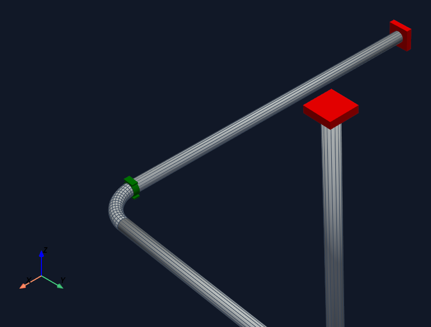
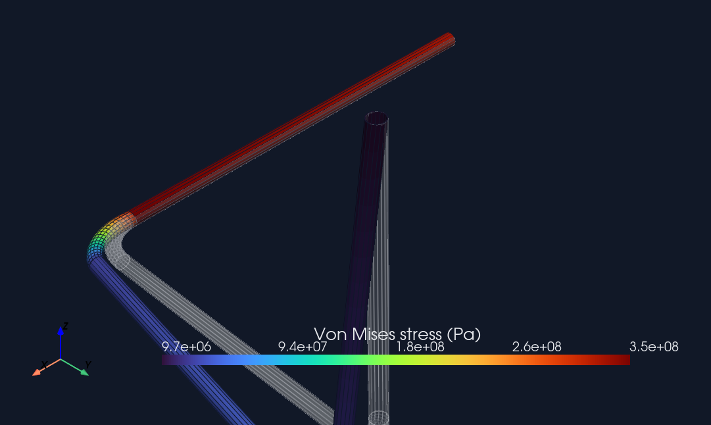

Tutorial
Build and solve a first pipe
This page is the v4 equivalent of the old first TUBA script: one small model, one operating state, one Code_Aster run, one result review. The important boundary is unchanged throughout: exported study files are a handoff. Engineering results start only after Code_Aster has run or real Code_Aster artifacts have been imported.
What you are building


The execution sequence
The whole tutorial is these six stages, in order. Each stage has a
distinct output; when a later stage's output is missing, do not infer
it from an earlier one. A written study.comm proves export
only — it does not prove solver execution or parsed results.
- Build and validate — author the model, then
model.validate(). Fix every reported error before export. - Export the study —
export_analysis_studywrites.mail,.comm,.export, the manifest, and the sidecar. Handoff only. - Run Code_Aster — on the configured runtime (WSL by default). Produces result tables and, when requested, an RMED file.
- Parse artifacts — the CSV/RMED tables are read into
FEAResults(displacement, reaction, internal force, stress). - Snapshot the state — wrap the results in a
revision-tagged
ResultState. - Review — a PyVista quick-look or a web scene bundle. Pick one path per notebook; do not add a third.
solve_exported_study, which runs
stages 3–4 in one call. model.solve()
is the one-call convenience that runs stages 2–4 together; the staged
path is easier to debug because each stage's output is inspectable.
Units
Every literal in the script is SI. There is no unit system to select; get the units right and the numbers are right.
| Quantity | Unit | Example in the script |
|---|---|---|
| Length, diameter, wall thickness, bend radius | meter (m) | OD=0.1143 is 114.3 mm |
| Pressure | pascal (Pa) | pressure=1.2e6 is 1.2 MPa |
| Temperature | degree Celsius (°C) | temperature=180.0 |
| Force | newton (N) | reactions come back in N |
| Density | kg/m³ | rho=7850.0 |
| Young's modulus, allowable stress | pascal (Pa) | E=210e9 is 210 GPa |
| Thermal expansion | 1/K | alpha=12e-6 |
allowable_stress is a table keyed by temperature: the dict
{20.0: 140e6, 180.0: 120e6} means 140 MPa allowable at
20 °C and 120 MPa at 180 °C. Compliance ratios
interpolate this table at the operating temperature.
Prerequisites
Run these checks before asking Tuba to execute a solve. The hosted GitHub Pages site cannot run Code_Aster; it can only document the workflow and display preserved review bundles.
.\.venv\Scripts\python.exe -m pip install -e ".[course]"
.\.venv\Scripts\python.exe -m tuba.solver.code_aster_doctor --checkThe whole script
Save this as a local script when Code_Aster is available. It builds the model, exports a traceable analysis study, runs Code_Aster, parses the produced result tables, and writes a browser review bundle.
from pathlib import Path
from tuba import Model
from tuba.analysis.results import result_state_from_fea_results
from tuba.solver.aster import CodeAsterSolver
from tuba.visualization import build_visualization_scene, write_scene_bundle
work_dir = Path("runs/first_pipe_operating")
model = Model(project_name="FirstPipe")
model.add_material(
"steel",
E=210e9,
nu=0.3,
rho=7850.0,
alpha=12e-6,
allowable_stress={20.0: 140e6, 180.0: 120e6},
)
model.add_pipe_section("DN100", OD=0.1143, WT=0.00602)
with model.pipe(section="DN100", material="steel", route="P-100") as pipe:
pipe.start([0.0, 0.0, 0.0], support="anchor")
pipe.run(2.0)
pipe.bend(radius=0.30, angle=90.0, plane="XY")
pipe.run(1.5)
pipe.end(support="anchor")
operating = model.define_operation(
"Operating",
gravity=True,
pressure=1.2e6,
temperature=180.0,
ref_temperature=20.0,
)
operating.add_field("temperature", 160.0, route_id="P-100", station_start=0.0, station_end=1.2)
solver = CodeAsterSolver(work_dir=str(work_dir), exec_method="wsl", wsl_distro="Ubuntu")
study = solver.export_analysis_study(model, "Operating", work_dir)
results = solver.solve_exported_study(model, study)
result_state = result_state_from_fea_results(model=model, study=study, results=results)
scene = build_visualization_scene(model, result_states=[result_state])
write_scene_bundle(scene, work_dir / "review_scene")What each part does
| Line or block | Meaning | Engineering consequence |
|---|---|---|
Model(project_name="FirstPipe") |
Creates the root TubaModel. |
All materials, sections, nodes, elements, supports, operations, and artifacts attach to this model. |
add_material(...) |
Defines elastic, density, thermal expansion, and allowable-stress data. | Code_Aster receives the material; compliance helpers need allowable stresses for ratios. |
add_pipe_section(...) |
Defines pipe outside diameter and wall thickness in meters. | Section properties drive mesh, stiffness, stress, routing envelopes, and visualization radius. |
with model.pipe(...) as pipe |
Starts the cursor-based pipe builder. | Builder commands create concrete nodes and elements with route and station metadata. |
start(..., support="anchor") |
Places the first node and attaches an anchor support. | Code_Aster boundary conditions and reaction parsing are tied back to this node. |
run(2.0) |
Adds a straight pipe element in the current direction. | The element becomes a stress-bearing pipe in the Code_Aster study. |
bend(...) |
Adds an elbow and records explicit bend geometry. | Solver mesh generation, compliance checks, and renderers do not need to infer the bend later. |
define_operation(...) |
Creates the operating scenario. | The operation compiles to the load case used by the Code_Aster writer. |
export_analysis_study(...) |
Writes the study files and provenance sidecars. | This is still only a solver handoff, not a completed analysis. |
solve_exported_study(...) |
Runs Code_Aster and parses its output tables. | This is where Tuba can begin returning solver-backed FEAResults. |
write_scene_bundle(...) |
Writes a static web-scene bundle for viewer/. |
The browser can review the already-imported result state without running a solver. |
bend(radius, angle, plane). When you instead know the exit
point the pipe must reach, use bend_to(point, radius, plane_normal),
which fits a circular bend that ends at that target. Both are in the
Pipe builder commands; use bend
for angle-driven routing and bend_to for point-driven routing.
Expected files
| Artifact | Created when | Result evidence? |
|---|---|---|
study.mail | Study export | No. Mesh input for Code_Aster. |
study.comm | Study export | No. Command input for Code_Aster. |
study.export | Study export | No. Runner handoff file. |
study_manifest.json | Study export | No. Tuba analysis mesh and provenance metadata. |
study_tuba_fem.json | Study export | No. Solver-name sidecar for mapping results back to Tuba ids. |
study_depl.csv | Successful Code_Aster execution | Yes. Parsed displacement table. |
study_effo.csv | Successful Code_Aster execution | Yes. Parsed internal-force table. |
study_reac.csv | Successful Code_Aster execution | Yes. Parsed reaction table. |
study_sieq.csv | Successful Code_Aster execution | Yes. Parsed equivalent-stress table for pipe studies. |
study.rmed | Successful Code_Aster execution when RMED output is produced | Yes. MED result artifact. |
review_scene/ | Scene bundle export after result import | Review surface for already-imported result state. |
Read the results
A successful solve_exported_study returns solver-backed
FEAResults. Confirm the run produced numbers, then read the
quantities an engineer checks first: peak stress, displacement, and
reactions. If these accessors raise or return empty, the solve did not
complete — treat it as a failed run, not a zero result.
import numpy as np
# Peak Von Mises stress over the model (Pa). get_max_von_mises is per element.
peak_vm = max(results.get_max_von_mises(el.id) for el in model.elements)
print(f"peak Von Mises: {peak_vm / 1e6:.1f} MPa")
# Displacement vector (m) and reaction (N) at a node id, e.g. the anchored start "N0".
u = results.get_displacement("N0") # np.ndarray, [ux, uy, uz] in metres
reaction = results.get_reaction("N0") # np.ndarray or None
print(f"|u| at N0: {np.linalg.norm(u) * 1000:.2f} mm")
# Notebook quick-look plots (PyVista):
results.plot_deformed()
results.plot_stress()Review it in the browser
Notebook-safe variant
In notebooks, use the shared loader. With run_solver=True,
it runs Code_Aster through the configured runtime. With
run_solver=False, the directory must already contain real
Code_Aster artifacts.
from tuba.analysis.code_aster_notebook import load_or_run_code_aster_results
run = load_or_run_code_aster_results(
model,
"Operating",
"notebooks/code_aster_results/stress_analysis_operating",
run_solver=True,
exec_method="wsl",
wsl_distro="Ubuntu",
)
results = run.resultsDone when
The tutorial is complete only when the study has real Code_Aster
result artifacts and Tuba has parsed them into FEAResults
or a ResultState. Export-only output is useful for review
and debugging, but it is not an engineering evaluation.